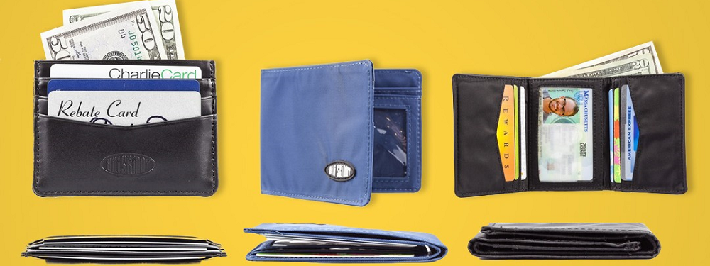
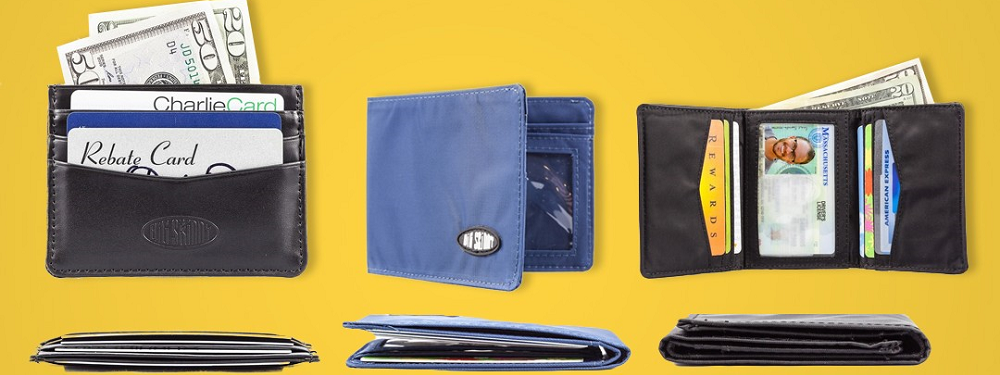

| THIN | STRONG | LIGHTWEIGHT | VERSATILE |
|---|---|---|---|
| Hate Thick Wallets? Then these thin Big Skinny wallets will reduce your wallet's thickness and weight by 50-75% or more depending on how many layers of thick leather or canvas your current wallet contains. Slim down your wallet and you'll see that the thin Big Skinny wallets are also very small and flexible; they fit into shirt pockets, or serve as front pocket wallets as well as fit snugly into your back pocket making you more comfortable than before. Look at these sizes & styles and check out our product video. | Our Big Skinny wallets feature a non-slip interior that allows you to stylishly sport around without losing your goods to gravity even though we designed them with extra-wide pockets! Often, you can even fill your thin Big Skinny wallet and turn it upside down without having cards and cash fall out. Think of the slim Big Skinny wallets as strong, thin, sexy skin for your cards and cash -- as close as you can get to not having a wallet at all... | Another big comfort benefit from our unique nylon micro-fiber wallets and leather hybrid wallet models is that they are not only thin and slim but also very light wallets. It is a very different feeling having thick heavy leather wallets in your pocket and having our thin, light nylon micro-fiber or hybrid wallets in your front or back pockets. Sitting on our small, thin, light wallets will prevent irritation to your sciatic nerve and many chiropractors recommend our thin Big Skinny wallets to their patients. Imagine cutting down your wallet size and weight by 50-75%. Look at how little Big Skinny wallets weigh. | On top of being slim, thin, and light, our high performance sports nylon line of Big Skinny wallets are water-resistant and tough enough to machine wash regularly. That means you can jump into a swimming pool and or take long bike rides or work extra hours on construction site or garden forever! Big Skinny wallets will just dry out in 1-2 hours from a full soak. Imagine doing that with leather or canvas or some other alternative wallet materials-they will bloat up & lose their size, shape, and color almost immediately. The thin Big Skinny wallet also stays the same thin and slim wallet because the water-resistant nylon micro-fiber material is very durable as well as attractive. |
Big Skinny / (big skin’ e) / adj./ 1. the most thin. 2. (noun/ slang) insider information; truth, the most important fact(s) or reason(s), e.g. ''What's the Big Skinny on your hot Bulgarian supermodel friend?" Or, "Don't mess around; just give me the Big Skinny."
Hate THICK wallets? For as long as I can remember, I've been searching for a thin wallet. I tried every advertised thin wallet and then everything else to keep my cash and cards organized together and to avoid having that uncomfortable and unsightly brick in my pocket. I felt like George Costanza with his wallet problems from the famous Seinfeld TV episode. I couldn't find anything that worked or even looked good; in reality, perhaps I was really looking for the anti-wallet.
Finally in frustration, I designed the original thin Big Skinny sport wallet. It took almost 2 years of testing dozens of designs and over 75 natural and man-made materials searching for the right balance of "thin wallet" yet with good looks, functionality, and durability. Using an advanced version of the stylish nylon micro-fiber material (5 to 7 times thinner than leather) that made Prada famous along with the special design resulted in a slim wallet so unique that I just had to name it. Imagine a well-organized slim wallet that you barely notice yet is good-looking and can fit 20+ credit cards plus bills.
Now using our 3rd generation of new, improved thin nylon-microfiber, our line of Big Skinny wallets are the world's thinnest wallets that are better for your back and will make you look and feel thin. We now have wallet models for men and women, a leather nylon hybrid wallet series, and also the thin sleek Super Skinny wallet which cuts your cards in half for extra thinness. Enjoy the benefits of the growing Big Skinny wallet line and, as always since founding Big Skinny in 2005, we look forward to hearing and incorporating your suggestions for improvement and new designs. We're a small company based in Harvard Square, Cambridge, MA. but we are big on responding quickly to customers. Let us know what wallet you want next--We design based on what our customers tell us!
Sincerely,
Kiril Stefan Alexandrov
Former MIT 50K Award Winner
Former Stanford University Global Challenge Winner
Curabitur vulputate, ligula lacinia scelerisque tempor, lacus lacus ornare ante, ac egestas est urna sit amet arcu. Class aptent taciti sociosqu ad litora torquent per conubia nostra, per inceptos himenaeos. Sed molestie augue sit.